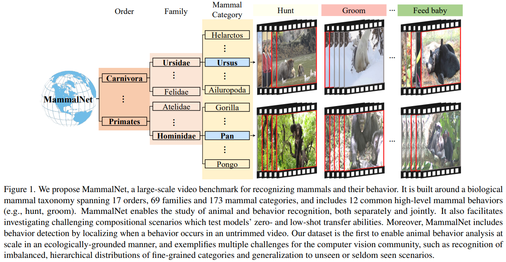
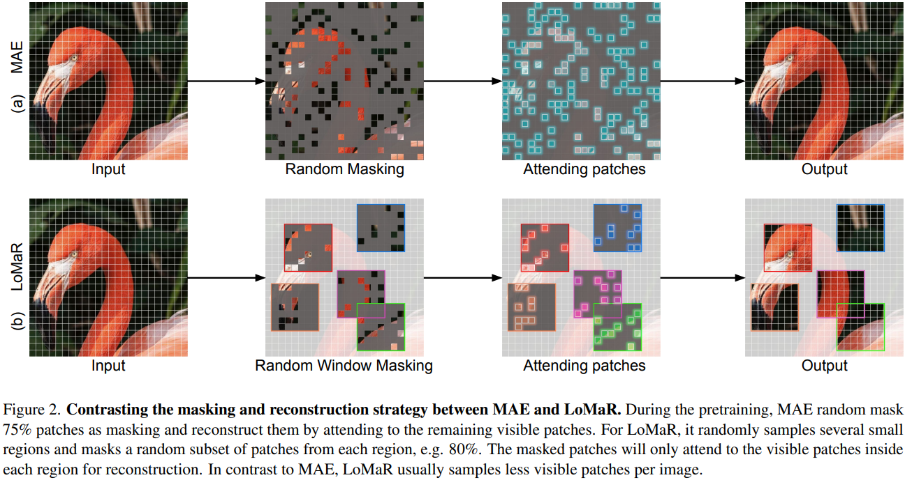

Ming HuPhD candidate
Faculty of Engineering
|
|


Biography
I am a first-year Ph.D student in Monash Medical AI Group (MMAI) at Monash University under the supervision of Prof. Zongyuan Ge and Peibo(Ben) Duan. Before that, I got the B. Eng degree from School of Electronics and Information Engineering, Anhui University of Technology, Maanshan, China.
My research interest lies in medical vision and language learning, multi-modal learning and large-scale pretraining model. Recently, I am exploring the application of diffusion model in medical image field.
News
- [08/2022] Writting paper.
Selected Publications
|  | MammalNet: A Large-scale Video Benchmark for Mammal Recognition and Behavior Understanding. Jun Chen, Ming Hu*, Darren J Coker, Blair Roberts Costelloe, Michael Berumen, Sara Beery, Anna Rohrbach, Mohamed Elhoseiny. In processing of CVPR 2023(In processing of CVPR 2023), 2022. [paper] |
|  | Efficient Self-supervised Vision Pretraining with Local Masked Reconstruction. Jun Chen, Ming Hu, Boyang Li, Mohamed Elhoseiny. In processing of CVPR 2023(In processing of CVPR 2023), 2022. |
Research Experiences
-
Intern, King Abdullah University of Science and Technology, Thuwal, Saudi Arabia 06/2021~now.
Vision-CAIR Lab Supervisor: Assistant Professor Mohamed Elhoseiny
Patent
- Ming Hu; Bao Chen; Jian Li. 2019. A Smart Home Robot Based on Big Data [P]. CN201911060852.5.
Honors & Awards
-
Chinese Government Scholarship(CSC), 2022-2026 -
3rd Prize, China Undergraduate Computer Design Competition, 2021 -
2nd Prize & 3rd Prize, National University Students' Opt-Sci-Tech Competition, 2019 & 2020 -
2nd Prize & 1st Prize, China Undergraduate Mathematical Contest in Modeling(CUMCM), 2019 & 2020 -
3rd Prize, May Day Mathematical Contest in Modeling, 2020 -
1st Prize, China Undergraduate Smart Car Competition, 2020 -
3rd Prize, National University Students Electrical Math Modeling Competition(CSEE Cup), 2019 -
Honorable Mentions, ShuWei Cup Mathematical Contest in Modeling(ShuWei Cup IMCM), 2019 -
2nd Prize, National Undergraduate Electronics Design Contest, 2019 -
2nd Prize, Certificate Authority Cup International Mathematical Contest in Modeling(CAMCM), 2019
Projects
-
301 Hospital Data Mining-Airdoc Meidcal Cooperation Project.07/2022-now.